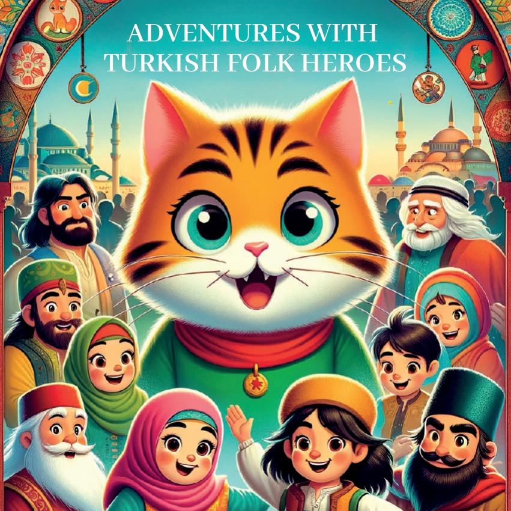
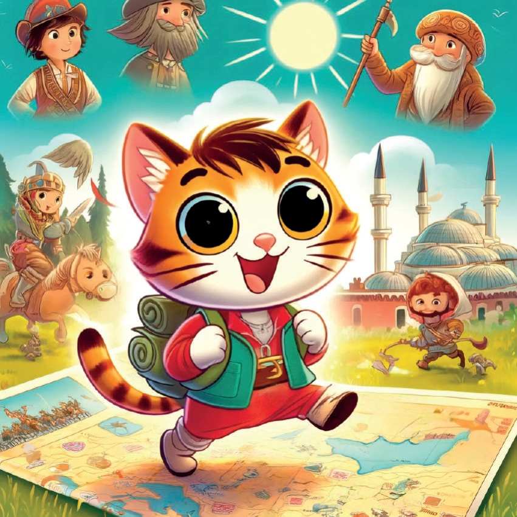
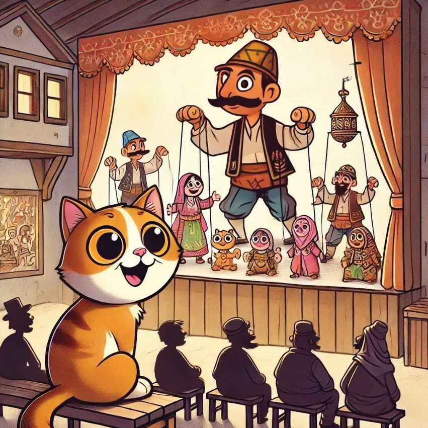
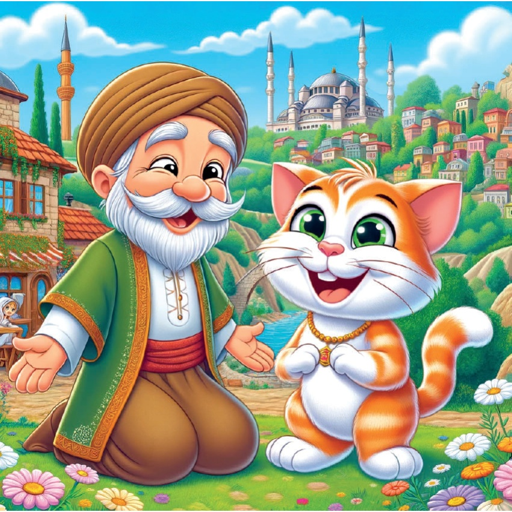
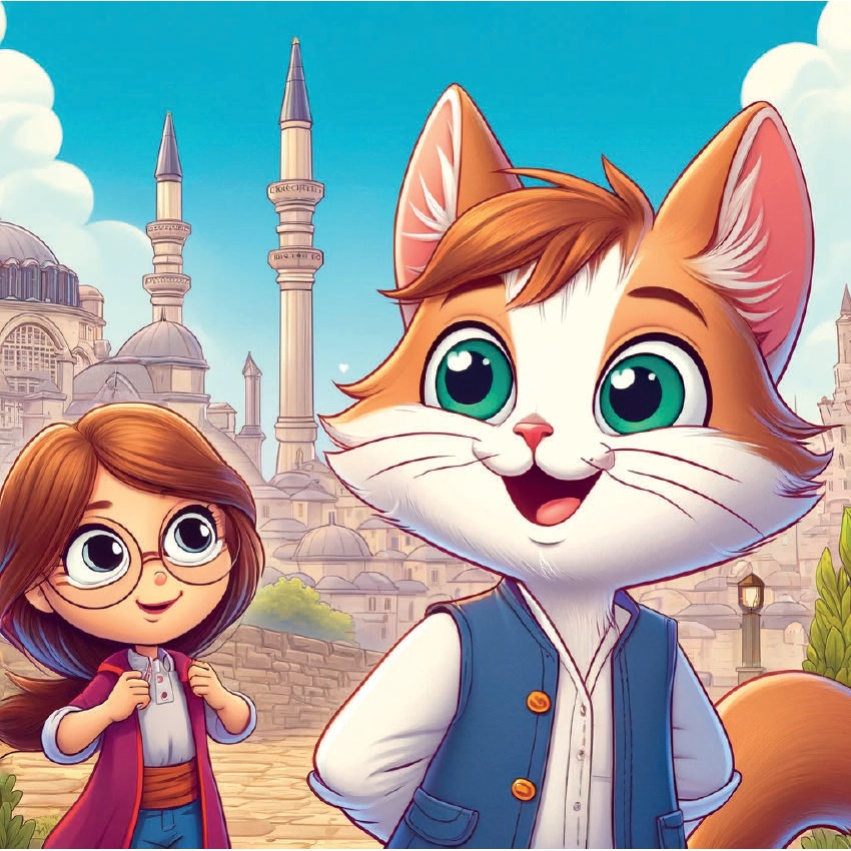
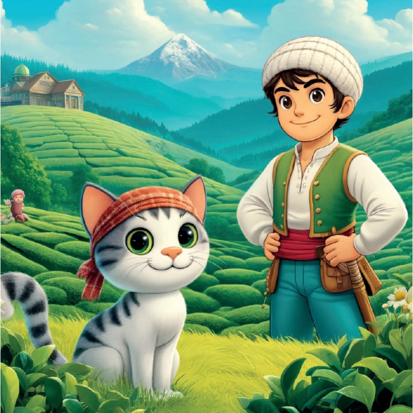
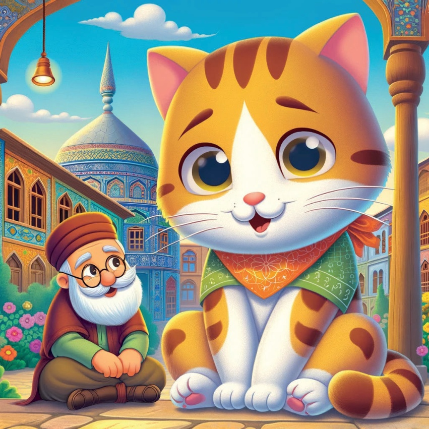
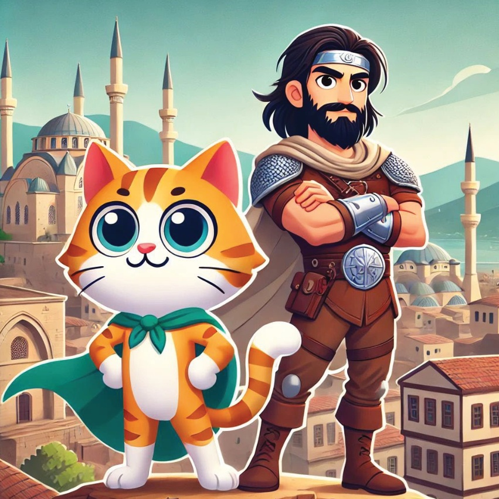
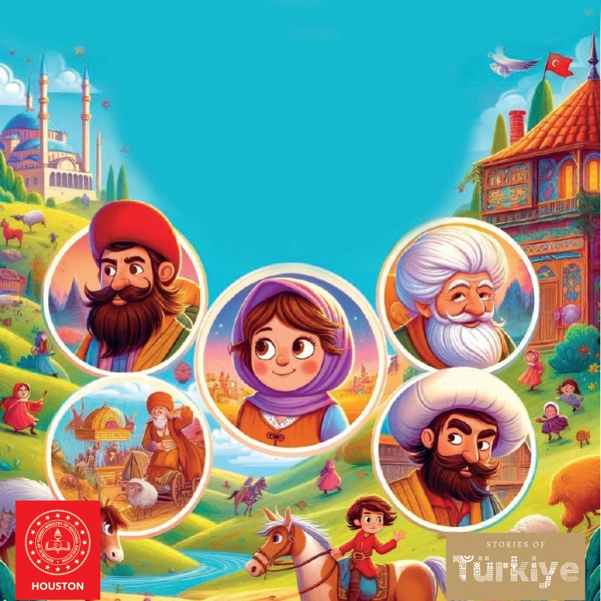

1

2

3
Bir zamanlar Karamel adında çok meraklı küçük bir kedi vardı. Karamel hikayeler dinlemeyi çok severdi. Karamel, Türkiye boyunca bir yolculuğa çıktı. Her bölgeden ünlü halk kahramanlarıyla tanışmak için yola koyuldu.
4

5
Marmara ərazisi - Bursa: Karagöz və Hacivat Karamelin ilk durduqları yer Bursa idi. Burada o, gölgə pəncəsi ilə məşhur olan komik ikili Karagöz və Hacivatla tanış oldu. Onlar Karelmi komik əyləncələri və hekalərirlə sevindirdilər.
6

7
Aegean Region - Manisa: Karamel, Keloğlan'a rastladı. Keloğlan, zeki və sallaq başlı qəhrämändir. O, hadisələrin maraqlı hekayələrini bölüşdü və həmişə problemləri həll etmək yollarını tapdığını göstərlədi.
8
9
Konya - Orta Anadolu:.
Karamel, Konya şəhərində Nasreddin Hocayla tanış oldu. Bilgili və komik Hoca, Karamelə əyləncəli hekalər və dəyərli öyrəncilər bölüşdü.
10

11
Mərkəzi İli - Burdur: Burdurda Zəkaları olan Qız.
Karamel Burdurda zəkası və inceliyi ilə tanınan digər bir qızla tanış oldu. O, bir çoxlarına zəkaları ilə necə üstün gəldiyini, clever həlllərlə necə qorxduğunu hekayə etdi.
12

13
Kara Dəniz Regionu - Giresun: Cesur Çoban Karamel sonra Giresun'a doğru yolculuk etti. Orada cesareti ve yiğitliğiyle tanınan başka bir Cesur Çobana rastladı. O, çobanlarını vahşi hayvanlardan korurken yaşadığı maceraları anlattı.
14

15
Şərqi Anadolu - Iğdır: Dede Korkut İğdırda Karameli Dede Korkutla tanış oldu. Dede Korkut, akıllı ve yaşlı bir hikaye anlatıcısıydı. O, bölgedeki kahramanların eski hikayelerini ve destanlarını Karamelle paylaştı.
16

17
Şərqi Anadolu - Adıyaman: Battal Gazi Karamelin son durakı Adıyaman idi. Orada o, qəhrəmən warrior Battal Gazı ilə tanış oldu. O, öz qə]^{h}rəmanlığı və vətənini qorumaq üçün döyüşlər haqqında hekaya dedi.
18

19
Karamelin qəlbini heyranlıq doldurmuş və o fikirlerle dolu olmuşdu ki, Türkiyənin həqiqətən də ən qiymətli dəyərləri onun zəngin xalq hikayələri və qəhrəmanlarıdır. O evə qayıtdi və næxt hadisəsinin dreamed edirdi.
20
21

22